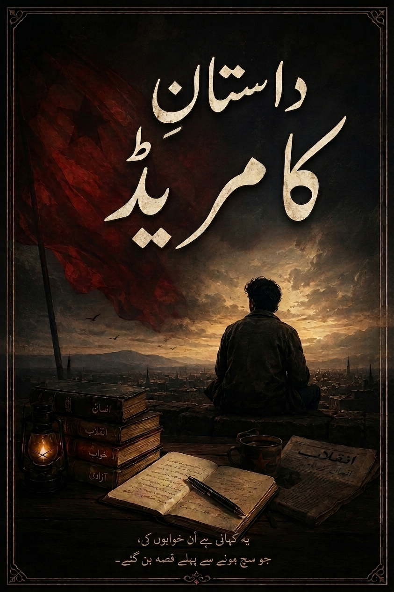

Introduction
What is Dastaan-e-Comrade?
Dastaan-e-Comrade is an Urdu novel by M. Umar Shahzad. This website gathers the book cover, author information, reading link, and free PDF in one place.
اردو ناول • Free Digital Edition
An Urdu book available free online for readers.
Free digital access. Please keep the author credit with the book when sharing.

The Book
The Internet Archive listing identifies the work as Dastaan-e-Comrade by M. Umar Shahzad, published in 2026, in Urdu. View the archive record.
The book title presented with its original cover and author credit.
Written & composed by M. Umar Shahzad.
A free digital edition for readers looking for Urdu literature.
About the book
داستانِ کامریڈ، اصلی زندگی سے متاثر ایک سوانح حیات ناول ہے۔ اس میں شخصیات کو فرضی نام دیے گئے ہیں۔
This website is a simple official-style landing page for the title. Readers can read the book through Internet Archive or download the PDF directly from this site.
The archive record describes the work as a novel inspired by real life, with fictional names, and lists the language as Urdu.
Contents
The uploaded edition lists seven chapters. Use the PDF button above to open the complete digital edition.
Blog
Short, useful pages can make the title easier to discover without stuffing the site with repetitive keywords.
Dastaan-e-Comrade is an Urdu novel by M. Umar Shahzad. This website gathers the book cover, author information, reading link, and free PDF in one place.
The book is available through its Internet Archive record, with a direct PDF download also provided on this site for convenient reading.
The uploaded edition credits M. Umar Shahzad as the writer and composer. This page can later be expanded with interviews, other works, and author links.
Share the book
Use this page as the central link for your author profiles, reading communities, social bios, and legitimate book directories.